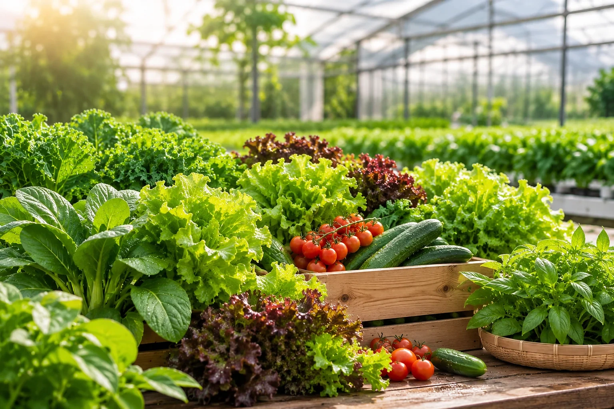

ครัวเรือน
ผักสดสำหรับมื้ออาหารประจำวัน สั่งเท่าที่ใช้ ได้ผักที่ปลูกด้วยวิถีอินทรีย์
FRESH FROM CIVIO FARM
ผักอินทรีย์ที่ปลูกในดินซึ่งบำรุงด้วยสารปรับปรุงดินจากเศษอาหาร ครบวงจรตั้งแต่เศษอาหาร สู่ดิน สู่ผักบนโต๊ะอาหารของคุณ

04 / FRESH VEGETABLESที่ฟาร์ม CIVIO ดินได้รับการบำรุงด้วยสารปรับปรุงดินที่ได้จากเศษอาหาร ทำให้ของเหลือจากมื้ออาหารกลับมาเป็นผักสดอีกครั้ง


บอกชนิดผักและปริมาณที่ต้องการ ทีมงานช่วยจัดรอบให้เหมาะกับการใช้งาน
ผักสดสำหรับมื้ออาหารประจำวัน สั่งเท่าที่ใช้ ได้ผักที่ปลูกด้วยวิถีอินทรีย์
วัตถุดิบสดสำหรับครัว แจ้งชนิดและปริมาณต่อรอบเพื่อวางแผนจัดส่ง
ผักสดสำหรับห้องอาหารและโรงอาหาร สอบถามการสั่งต่อเนื่องกับทีมงาน
แจ้งความต้องการกับทีมงานได้เลย ไม่ต้องสมัครสมาชิก
บอกชนิดผักและปริมาณที่ต้องการ ผ่านแบบฟอร์มหรือช่องทางติดต่อของ CIVIO
ทีมงานตรวจสอบผลผลิตที่มีในช่วงนั้น พร้อมแจ้งราคาและรอบจัดส่ง
รับผักตามรอบที่ตกลงกัน เพื่อให้ได้ผักสดใหม่
เพราะผักทุกต้นเริ่มต้นจากดินที่เรากลับมาดูแลเอง
ใช้สารปรับปรุงดินจากเศษอาหารที่ผ่านเครื่อง CIVIO
ฟาร์ม CiviO ผ่านการตรวจรับรองมาตรฐาน Organic Thailand
ผลผลิตเปลี่ยนไปตามฤดูกาล ทีมงานแจ้งรายการที่พร้อมส่งให้
ฟาร์มจัดกิจกรรมเรียนรู้และต้อนรับผู้เยี่ยมชมตามรอบดำเนินงาน
รายการผักและราคาเปลี่ยนไปตามฤดูกาลและปริมาณผลผลิต แจ้งความต้องการกับทีมงานเพื่อรับรายการล่าสุด
ได้ แจ้งชนิดผักและปริมาณที่ต้องการต่อรอบ ทีมงานจะประสานรอบจัดส่งให้เหมาะกับครัว
ปลูกในดินที่บำรุงด้วยสารปรับปรุงดินจากเศษอาหาร ฟาร์ม CiviO ผ่านการตรวจรับรองมาตรฐาน Organic Thailand
ฟาร์มต้อนรับผู้เยี่ยมชมและจัดกิจกรรมเรียนรู้ตามรอบดำเนินงาน กรุณานัดหมายกับทีมงานก่อนเดินทาง
บอกชนิดผักและปริมาณที่ต้องการ ทีมงานจะติดต่อกลับโดยเร็ว